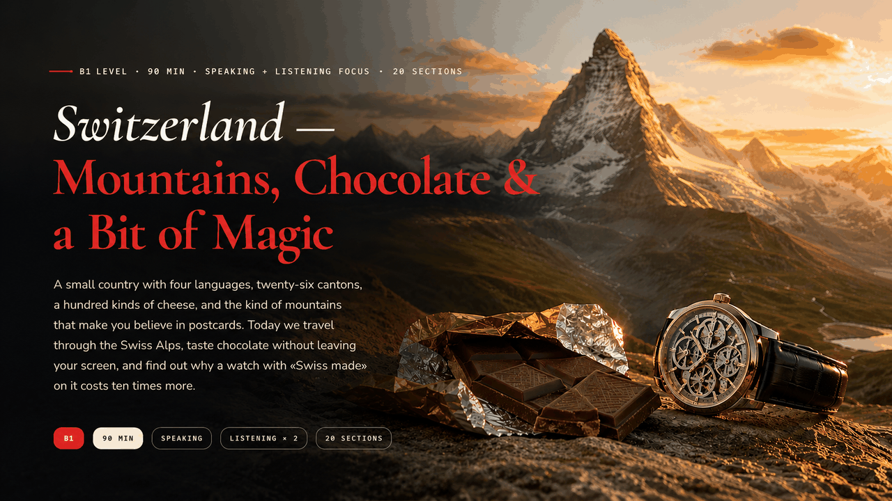
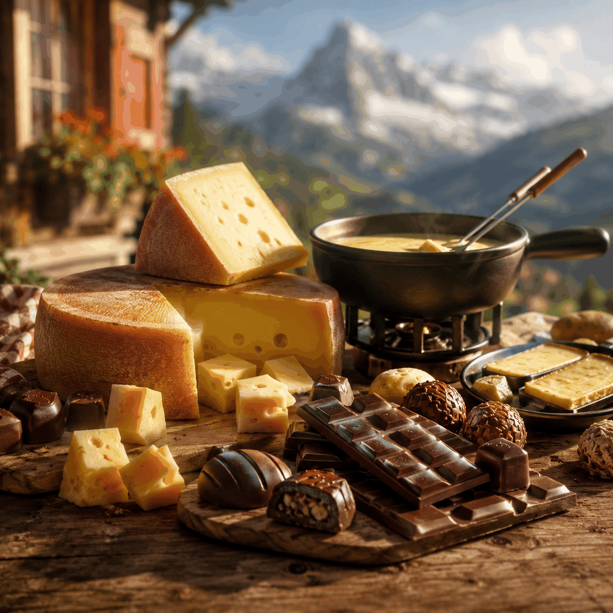
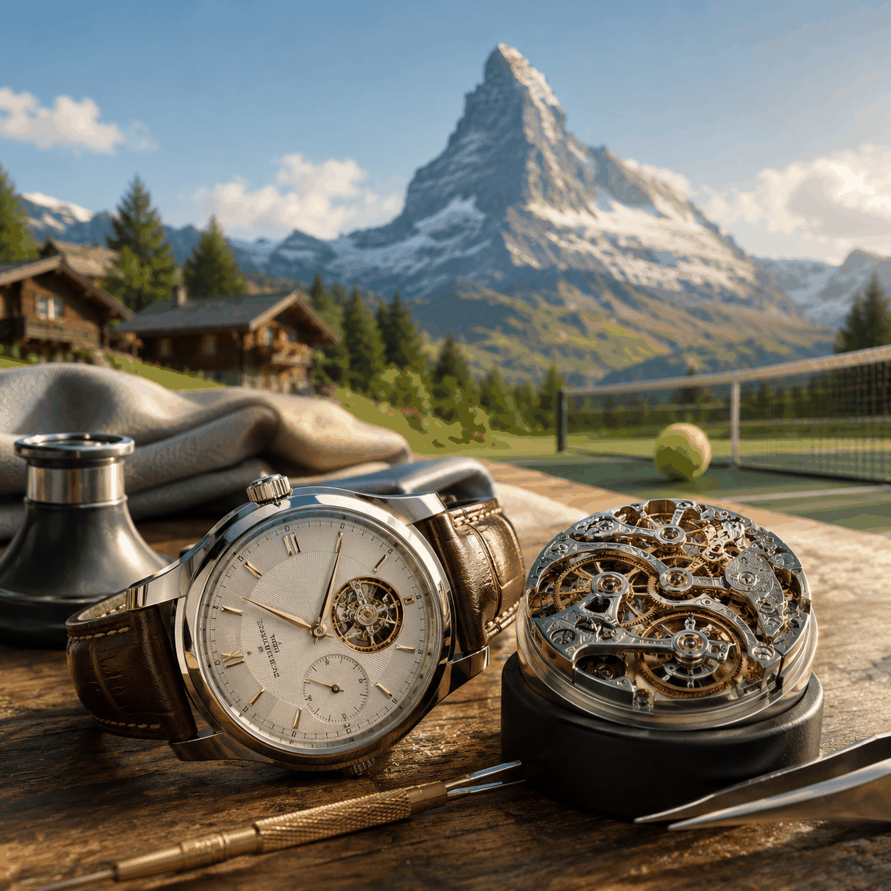
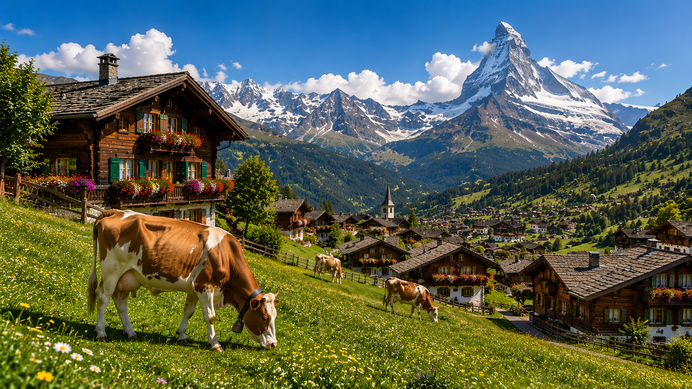
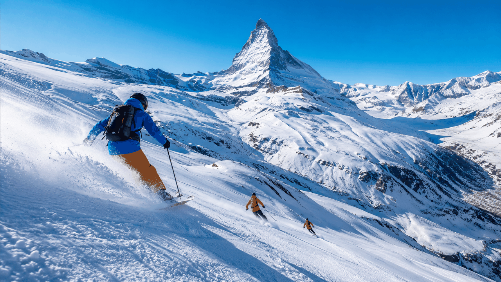
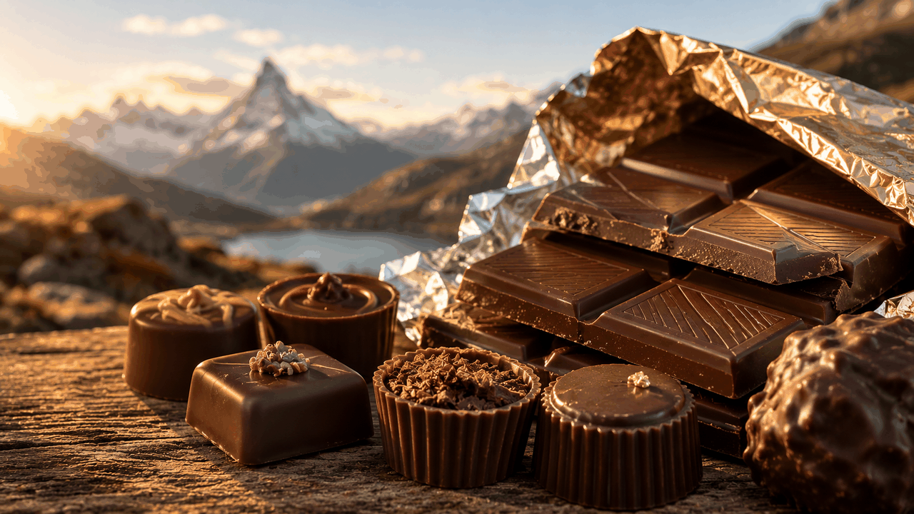
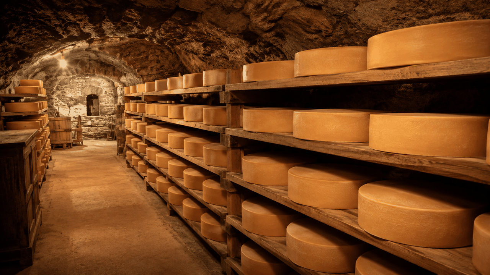
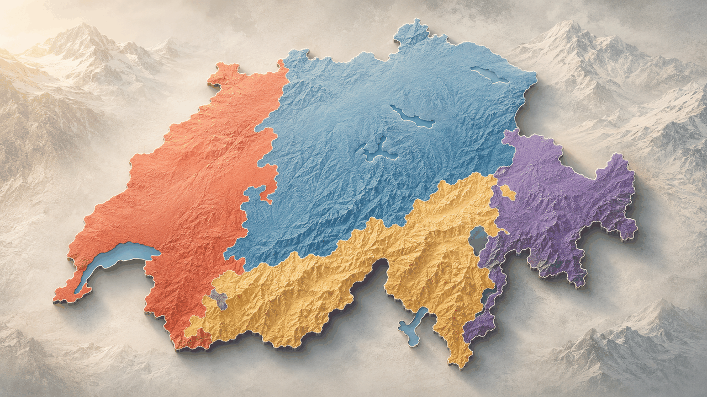
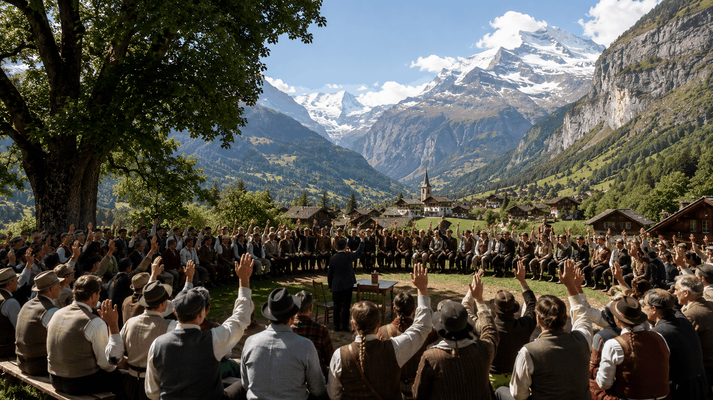

Tap to hear the welcome: Welcome to Switzerland. Today we travel through three Switzerlands at once — the Alps, the kitchen, and the workshop. We start with mountains and Heidi, then we taste chocolate and cheese, and we finish with watches, icons, and a little quiet power.
The Heart · Matterhorn, Heidi, skiing in Zermatt · vocab + speaking

The Taste · Lindt, Toblerone, Gruyère, fondue, raclette · reading + matching

The Craft · Rolex, Patek Philippe, Roger Federer · listening + speaking
Pick a word from the bank and drop it into the right gap. (Tap a word → tap the gap.)
If you ask anyone in the world to draw a Swiss mountain, they will probably draw a perfect triangle. That triangle is the Matterhorn, 4,478 metres tall, on the border between Switzerland and Italy. It is the most photographed mountain on Earth — and the one on every box of Toblerone chocolate.
But the Matterhorn is not alone. The Swiss Alps also have the Jungfrau («the young maiden», 4,158 m), the dark and dramatic Eiger («the ogre», 3,967 m), and the longest glacier in Europe, the Aletsch, a frozen river of ice 23 km long.
Almost 60% of Switzerland is covered by mountains. People live in the valleys; the high peaks belong to climbers, skiers, and the occasional very brave goat.

In 1880 a Swiss writer named Johanna Spyri published a short book about a little girl. The girl's name was Heidi. She lived high in the Alps with her grandfather, drank fresh goat milk, and ran barefoot through wildflower meadows.
The book sold 50 million copies. It was translated into 50 languages. It became films, anime series, theme parks. For the whole world, Heidi = Switzerland.
If you visit the area around Maienfeld in eastern Switzerland today, you can find «Heidi's village» — with the chalet, the goats, and Grandfather's hut. The line between fiction and tourism is happily blurred.

tap any line to listen · uses your browser's voice
1. Build: Where is the Matterhorn?
2. Build: How long is the Aletsch glacier?
3. Build: What would you take with you to the mountains?
4. Build: Could Heidi really live alone in the Alps?

The Swiss did not invent chocolate. The Aztecs drank it as a bitter dark liquid hundreds of years before any European tasted it. But the Swiss did one thing that changed chocolate forever — in 1875 a man named Daniel Peter mixed cocoa with fresh Alpine milk. Milk chocolate was born.
A year later, a confectioner called Rudolph Lindt invented a machine that stirred chocolate for 72 hours. The result was smooth — so smooth it would melt on your tongue like silk. The Swiss had cracked the code.
Today the three biggest names are Lindt (founded 1845, the smooth one), Toblerone (those triangular bars shaped like the Matterhorn, since 1908), and Cailler (the oldest Swiss chocolate brand, since 1819). The average Swiss person eats 11 kilograms of chocolate per year — about three times what most countries eat.
Lindt truffle — a small soft ball of chocolate with a creamy filling inside. Melts in your mouth almost instantly.
Toblerone — a long triangular bar with little Matterhorn-shaped pieces. Inside are nougat, honey, and almond. You bite, you chew.
Hot chocolate — Swiss hot chocolate is famously thick. They make it with real melted chocolate, not powder. Perfect for winter.
Chocolate ice cream — in summer Geneva is full of small ice cream stands by the lake. The Swiss take their ice cream as seriously as their chocolate.
Factory tour — Lindt has a museum near Zurich. You watch chocolate being made, then taste 30 kinds. Tickets go fast.
Make at home — there are classes in Bern and Geneva. You melt, mix, pour, and take your creations home in a box.

Switzerland produces over 450 types of cheese. The most famous three are Gruyère (nutty, slightly sweet, perfect for fondue), Emmental (the «Swiss cheese» from cartoons — the one with the big round holes), and Raclette (a soft cheese designed to be melted).
Why does Emmental have holes? For 100 years scientists argued. In 2015 they finally found the answer: tiny pieces of hay from the cow's barn fall into the milk during traditional cheese-making. As the cheese ages, the hay produces gas, and the gas creates the holes. Modern factories now add the «hay particles» on purpose.
Every winter Swiss families gather around two dishes: fondue (you dip bread into a pot of melted cheese mixed with wine) and raclette (a half-wheel of cheese is heated, then scraped onto boiled potatoes). Both are slow, social, and impossibly delicious.
The Swiss watch story begins not in the Alps but in Geneva in the 16th century. The city banned jewellery (too vain, said the religious leaders), so the jewellers had to find a new craft. They became watchmakers. Today, four centuries later, Switzerland makes only 2% of the world's watches by quantity — but 50% of the world's watch value.
The most famous names: Rolex (the symbol of success), Patek Philippe (the most prestigious — they say «you never actually own one, you merely look after it for the next generation»), and Omega (the one that went to the Moon with the Apollo astronauts).
The label «Swiss made» is protected by law. To use it, at least 60% of the watch's value must be produced in Switzerland, and the mechanical movement must be assembled, adjusted, and tested there. It is one of the strongest «Made in» brands on Earth — a promise of precision.
Born in Basel, 1981. 20 Grand Slam titles. The most graceful tennis player who ever lived. Speaks four languages — Swiss German, German, French, and English — depending on which microphone is closer.
Born in a book in 1880. Lives forever in the Alps. The face of Switzerland for the world's children — and probably the most successful Swiss export after the Matterhorn.
A folk hero from the 14th century. The legend says he shot an apple off his son's head to save his life from a cruel ruler. Whether he existed or not — every Swiss child knows his story.

Switzerland is the only country in Europe with four official languages: Swiss German (65%), French (23%), Italian (8%), and Romansh (less than 1%, spoken only in a few mountain valleys).
Every banknote, every food label, every train announcement is in three or four languages. Children grow up bilingual at minimum, often trilingual. Federal politicians switch between languages in the same sentence.
«Hallo, wie gehts?»
Zurich · Basel · Bern
«Bonjour, ça va?»
Geneva · Lausanne
«Ciao, come stai?»
Lugano · Ticino canton
Speaking: Which language would you learn if you moved to Switzerland — and why? (useful, beautiful, easy, family connection?)
tap any phrase above to hear the pronunciation

Switzerland is a direct democracy — which means the people, not just politicians, vote on actual laws. Four times a year, every Swiss citizen receives a thick envelope of questions: «Should we change the minimum wage?», «Should the army buy new planes?», «Should the train station be expanded?»
In a few small mountain cantons, people still gather once a year in the town square and vote by raising their hands. This is called Landsgemeinde. It is the oldest form of democracy in Europe — older than the United States.
In 1815, after the Napoleonic wars, the great powers of Europe gathered and gave Switzerland an unusual gift: permanent neutrality. The deal — Switzerland would never take sides in a war. In return, no one would attack it.
It worked. While both World Wars destroyed Europe around it, Switzerland stayed peaceful. Money from across the continent flowed into Swiss banks — for safety. This is how Swiss banking secrecy was born: the idea that what you put in a Swiss bank stays there, and no one — not even your own government — can see it.
Things have changed since 2010 (the United States and EU pushed hard for transparency), but Swiss banks are still some of the most trusted in the world. And neutrality is still official policy: Switzerland only joined the United Nations in 2002.
Population: 430,000 (largest city)
Vibe: clean, expensive, efficient, German-speaking.
Famous for: banks (UBS, Credit Suisse), ETH (a top engineering university), Lake Zurich. Often voted the best city to live in on Earth.
Population: 200,000
Vibe: elegant, international, French-speaking, full of diplomats.
Famous for: the United Nations (European HQ), the Red Cross (founded here in 1863), WHO, the Jet d'Eau (a 140 m water jet on the lake), and just 30 minutes away — CERN, where the Higgs boson was discovered.
Population: 134,000 (the capital — surprise!)
Vibe: small, beautiful, medieval, German-speaking.
Famous for: a perfectly preserved old town (UNESCO), a clock tower, real live bears in a pit, and the apartment where Einstein lived and wrote his theory of relativity in 1905.
Zermatt — a tiny mountain village, no cars allowed, the Matterhorn outside every window. Quiet, snowy, expensive. You see the same hundred people all year.
Zurich — a polished modern city, perfect public transport, museums, lake, top universities. You can have anything — but the price is the price.
Own one — a real Swiss mechanical watch is a piece of art on your wrist. It will outlive you.
Make one — at the Patek Philippe Museum in Geneva you can take workshops. You will not finish a real watch in a day, but you will understand why they cost what they cost.
German — opens 65% of Switzerland and most of central Europe. Hard but logical. The language of work.
Italian — opens Ticino (the sunny southern canton), all of Italy, parts of Croatia. Easier to pronounce, full of music. The language of pleasure.